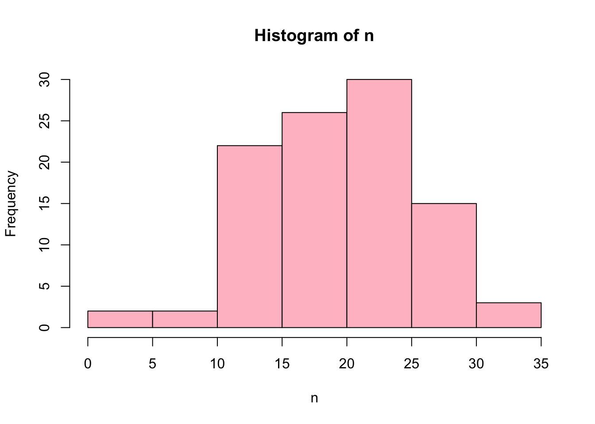
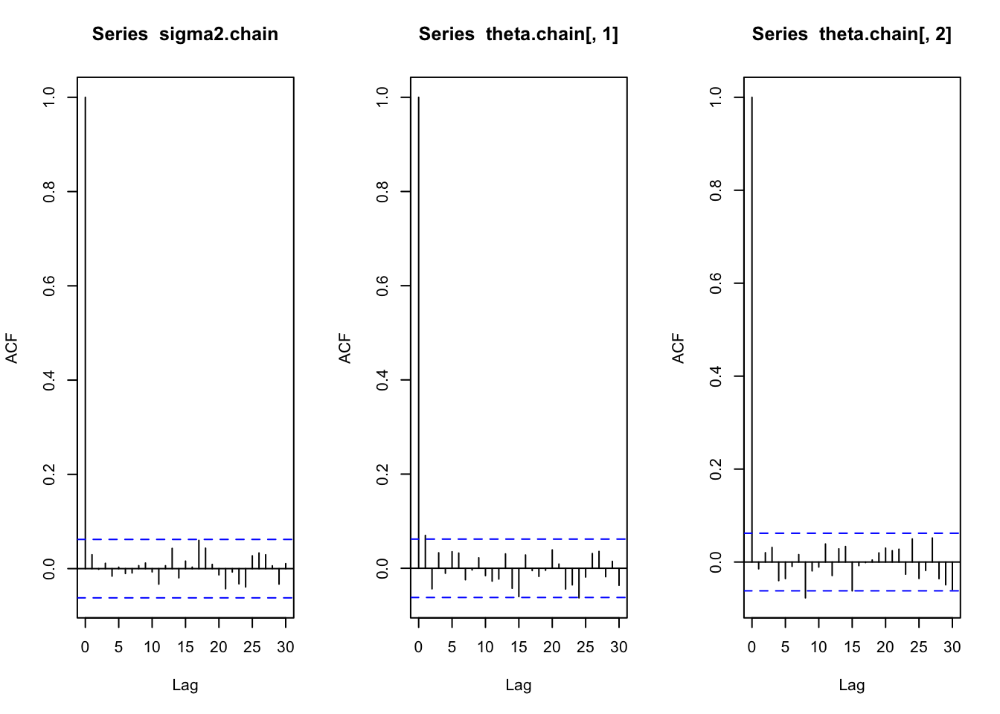
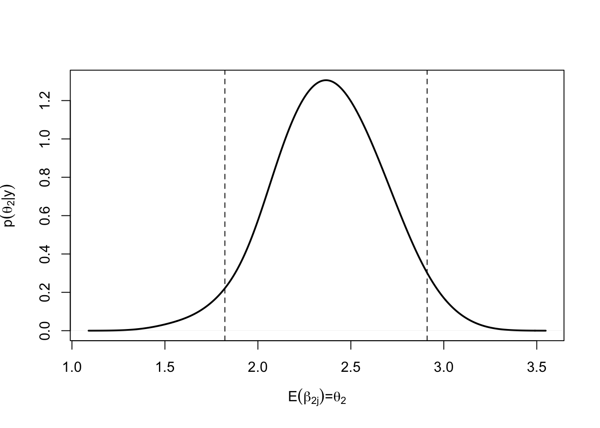
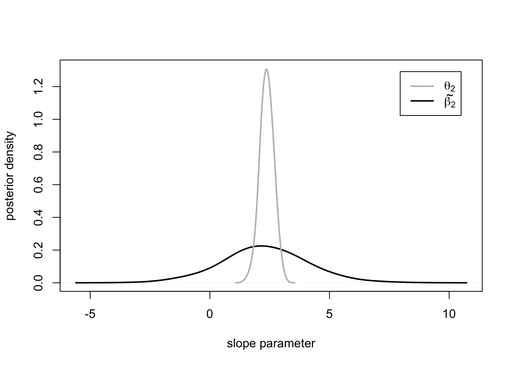

Lecture 19 Linear Mixed-effects Models, aka, Hierarchical Linear Models
The following notes, mostly transcribed from Neath(0607,2021) lecture, summarize sections (11.1-11.3) of Hoff(2009).
19.1 Hierarchical model review
The hierarchical normal model says \(Y_{i,j} \sim\) Normal\((\theta_j, \sigma^2 )\) where \(Y_{i,j} =\) response for subject \(i\) in group \(j\). There’s a different mean value in each group.
Think about data sets that arise from two stages of sampling, studying a medical procedure by having \(m\) different hospitals being tested. \(Y_{i,j} =\) outcome for the \(i\)th patient at the \(j\)th hospital. The different medical centers are gonna be similar to each other but not exactly the same. It wouldn’t be appropriate just to combine the data \(Y_{i,j}\) and pretend they are all independent observations from one big population because they’re not that, they are \(m\) different populations. It also wouldn’t be the best analysis to analyze them completely separately because some of them may be very some sample sizes that we can’t learn anything from anyway.
We’re going to apply this idea to regression modeling where we have \(m\) different groups of observations. We believe there exists a different regression relationship within each group but the groups are themselves a sample from a population of groups. We’re going to use the same example that we used for chapter 8 where we have data on test scores of 10th graders from 100 different schools. Let \(Y_{i,j}=\) test score for student \(i\) at school \(j\), \(j=1,2,...,100\). There are 1993 students total. These 1993 students are not an independent random sample from the population of 10th graders. The 100 schools in the sample are a random sample from the population of US high schools. 1993 / 100 \(\approx\) 20, so the within-school sample sizes are 20 on average. So the student on which we collect the data are a random sample from all students at that school.
Our model in chapter 8 said:
\(Y_{i,j} = \theta_j + \epsilon_{i,j}\), where
\(\theta_j\) represents the mean score at school \(j\) and \(\epsilon_{i,j}\) is the student \(i\) random variation
\(\theta_j \stackrel{\text{iid}}\sim\) Normal\((\mu, \tau^2)\)
\(\epsilon_{i,j} \stackrel{\text{iid}}\sim\) Normal\(( 0 , \sigma^2 )\)
The the school means \(\theta_j\) are themselves a random sample from the population of schools. Depending on how you define a parameter, there are either 3 or 103 parameters in this model. There is \(\mu\) and \(\tau^2\) which describe the distribution of school means. \(\theta_j\) and \(\sigma^2_j\) describe the \(j\)th school and it is a simplifying assumption that \(\sigma^2_j=\sigma^2\) is the same for all \(j\). Hence, with this assumption we have 3 parameters: \(\mu, \tau^2, \sigma^2\).
We attach prior distributions to these parameters
\(\mu\) (Normal) = overall mean
\(\tau^2\) (inverse-gamma) = between-schools
\(\sigma^2\) (inverse-gamma) = within-schools variance.
The model says \(\theta_j \stackrel{\text{iid}}\sim\) Normal\(( \mu, \tau^2 )\). THIS IS NOT A PRIOR DISTRIBUTION. This is a sampling distribution (\(\theta_j\) is not a parameter) because the probability distributions on \(\mu, ~\tau^2\) and \(\sigma^2\) describe our uncertainty. However, the probability distribution on \(\theta_j\) describes the random sampling that makes up the experiment. The experiment is to sample a 100 schools and then sample between 5 and 30 students from each school. But if we repeated the experiment we would have different \(\theta_j\)’s but we would have the same \(\mu, ~ \tau^2\) and \(\sigma^2\)
19.2 Hierarchical linear regression model for math scores data
We are considering the same data but now we have an additional variable.
Response variable \(y_{i,j}\) is test score for \(i\) student at school \(j\). Predictor variable \(x_{i,j}\) for the \((i,j)\) student is the socioeconomic status score (SES) centered to have mean zero at each school. SES score is based on parents income and education level.
What we’re interested in today is estimating the regression relationship \(y_{i,j} = \beta_{1,j} + \beta_{2,j} x_{i,j} + \epsilon_{i,j},\) and how these relationships differ across schools. \(\beta_1\) is the intercept term \(\beta_2\) is the slope (the relationship between SES and test score) and it’s probably \(> 0\). Note there’s a \(j\)-subscript on those \(\beta\)’s! because we are allowing that this regression relationship is different at different schools.
We will need to group these data by schools for the modeling we want to do. For grouped data like these it’s convenient to store them in a list
ids <- sort(unique(nels$sch_id))
m <- length(ids) # number of schools = 100
y <- list();# list of response variables
X <- list();# regressor matrices for the 100 schools
n <- NULL;
for(j in 1:m)
{
y[[j]] <- nels[nels$sch_id==ids[j], 4]
n[j] <- sum(nels$sch_id==ids[j])
x.j <- nels[nels$sch_id==ids[j], 3]
x.j <- (x.j - mean(x.j)) #centering
X[[j]] <- cbind(rep(1, n[j]), x.j)
}The \(\texttt{x.j}\) variable here is \(x_j-E(x_j)\) so that \(\texttt{x.j}\) have a mean of zero at each school.
Regression quiz: When the \(x\)-variable in regression model is centered to have mean zero what is the interpretation of the intercept term?
\(\beta_{1,j} = E(Y | X=0)\), “\(x=0\)” means \(x\) is the mean value. So centering the \(x\)-variable makes the intercept term \(\beta_{1,j}\) equal the expected test score for a student with exactly average socioeconomic status score (SES). In other words, intercept is mean of \(Y\) at the mean value of each of the predictor variables.
There are \(m = 100\) schools in this data set so we are going to fit \(m=100\) separate regressions.
# Separate OLS fits at each school
beta.hat.OLS <- matrix(NA, m, 2)
sigma2.hat <- rep(NA, m)
for(j in 1:m)
{
fit <- lm(y[[j]] ~ 0 + X[[j]]) # no intercept
beta.hat.OLS[j,] <- fit$coef
sigma2.hat[j] <- summary(fit)$sigma^2
rm(fit)
}plot(range(nels[,3]), range(nels[,4]), type="n",
xlab="SES", ylab="Math score")
for(j in 1:m){ abline(beta.hat.OLS[j,], col="gray") }
abline(apply(beta.hat.OLS, 2, mean), lwd=2)Figure 19.1: 100 separate OLS fits in light gray, and the average slope / average intercept in solid black
This display has 100 gray lines “\(\hat y = \hat\beta_{1j} + \hat\beta_{2j}\texttt{SES}\) for \(j = 1, …, 100\).” They are the 100 OLS regression lines for the 100 schools in the data set. The black line is the “average” of those 100 (the full pooled model estimate) where intercept = average of the intercepts and slope = average of the slopes. There are a few negative slopes which is not expected, but there are mostly positive associations. The fully pooled model is wrong because the data are not iid. The no pooling model is not wrong but does not give the most precise inference.
hist(n, col = "pink") School specific sample size range from 4 to 32. Fitting a regression line to four points is certainly something we can do, but don’t expect a very accurate estimate.
par(mfrow=c(1,2))
plot(n, beta.hat.OLS[,1], xlab="sample size", ylab="intercept")
abline(h=mean(beta.hat.OLS[,1]), lwd=2)
plot(n, beta.hat.OLS[,2], xlab="sample size", ylab="slope")
abline(h=mean(beta.hat.OLS[,2]), lwd=2)%20sample%20size-1.png)
We have 100 pairs of \(\boldsymbol{\hat\beta}\)’s (estimates) corresponding to the 100 schools and 100 sample sizes, and these plots of estimates versus group sample size. Are these values associated? From the plots, not really. However, there is a tendency for the extreme \(\beta\)-values (both high and low) to occur at schools where sample size is low.
Recall the normal hierarchical model; the “best estimate” of \(\theta_j\) (the group \(j\) mean) was not \(\bar y_j\)(group mean) nor was it \(\bar y_\bullet\) (grand mean), it was somewhere in between. We’re gonna see something similar here. The best estimate of the school \(j\) regression relationship is not that school’s gray line and it’s not the black line either it’s somewhere in between. The bigger the sample size the closer it will be to gray line.
Two extreme approaches to analyzing these data (1) At one extreme conduct 100 separate regression analyses and that’s our analysis! That’s not wrong it’s just not optimal since these estimates are subject to very high uncertainty (owing to the low sample sizes) and this does not make the best use of all the information we have available (2) At the other extreme combine all 100 schools into a single sample of size \(n=\) 1993. The result would be the solid black line from that earlier plot. This would be wrong because it would way overstate our confidence because it pretends our data are a random sample of size \(n=\) 1993 which they’re not. Also, it gives no basis for studying the between-school differences which might be of interest. The analysis that sits between these two extremes that optimally uses all the information available is the hierarchical regression model.
19.3 Bayesian hierarchical linear regression model
We will describe this model in a hierarchical way i.e, at multiple levels. There’s the within-group level and between-group level.
The within-group sampling model says:
\[ \mathbf{Y}_j \sim \text{Normal}_{nj}(\mathbf{X}_j\boldsymbol\beta_j, \sigma^2\mathbf{I}) \] we assume \(\sigma^2_j\) is the same for all \(j\).
The between-group sampling model says:
\[ \boldsymbol\beta_1,...,\boldsymbol\beta_m \stackrel{\text{iid}}\sim \text{Normal}_p(\boldsymbol\theta, \boldsymbol\Sigma) \]
We will assume (mostly for convenience) that \(\boldsymbol\beta_j\) for \(j = 1, …, m\) are a random sample from a \(p\)-variate normal distribution.
\(\mathbf Y_j\) are observable \(\boldsymbol\beta_j\) are unobservable but both are modeled by sampling distributions. The unknown model parameters consist of \(\sigma^2\) (scalar) \(\boldsymbol\theta\) ( \(p\)-vector ) and \(\boldsymbol\Sigma\) ( \(p \times p\) positive-definite matrix ).
We have the sampling distributions that will drive the likelihood part of our Bayesian model. We need prior distributions to describe our beliefs about \(\{~\boldsymbol\theta, \boldsymbol\Sigma, \sigma^2~\}\) before observing the data.
Attempt at Fig. 11.2. (Hoff) A representation of the hierarchical normal regression model.
\[ \begin{array}{c} \boldsymbol\theta,\boldsymbol\Sigma \longrightarrow \boldsymbol\beta_1,...,\boldsymbol\beta_{m-1},\boldsymbol\beta_m \longrightarrow \mathbf{Y}_1,...,\mathbf{Y}_{m-1}, \mathbf{Y}_m\\[0.1cm] \sigma^2 \longrightarrow\mathbf{Y}_1,...,\mathbf{Y}_{m-1}, \mathbf{Y}_m\\[0.3cm] \end{array} \]
\(\boldsymbol\theta\) and \(\boldsymbol\Sigma\) are the mean and variance for the population of regression lines. In the hierarchical normal model there’s a whole population of school averages (the true group means). In this model there’s a whole population of regression parameters \((\boldsymbol\beta_j , \sigma^2_j ).\) We observe a random sample of \(\boldsymbol\beta_j\)’s from that population except we don’t exactly observe it. What actually happens is; within each sampled group we observe a random sample of units \(Y_{i,j}\) within that group and from those observations we can make inference about the \(\boldsymbol\beta_j\).
So how does \(\mathbf Y_1, \mathbf Y_2, …., \mathbf Y_{m-1}\) inform our inference about \(\boldsymbol\beta_m?\) Well \(\boldsymbol\beta_m\) depends on \(\boldsymbol\theta\) and \(\boldsymbol\Sigma,\) and \(\mathbf Y_{m}\) depends on \(\boldsymbol\beta_m\). Meanwhile \(\mathbf Y_1, …., \mathbf Y_{m-1}\) depend on \(\boldsymbol\beta_1, …., \boldsymbol\beta_{m-1}\) which in turn depend on \(\boldsymbol\theta\) and \(\boldsymbol\Sigma\) and therefore \(\mathbf Y_1, …., \mathbf Y_{m-1}\) contain information about \(\boldsymbol\theta\), \(\boldsymbol\Sigma\) and that in turn informs our inference about \(\boldsymbol\beta_m\).
Arrows in this picture represent sampling distributions. The sampling distribution of \(\boldsymbol\beta_j\) depends on \(\boldsymbol\theta\) and \(\boldsymbol\Sigma\) the sampling distributions of \(\mathbf{Y}_j\) depend on \(\boldsymbol\beta_j\) and \(\sigma^2\). There are no arrows pointing at \(\boldsymbol\theta\), \(\boldsymbol\Sigma\) \(\sigma^2\) which means we need to assign a prior distribution to them.
BUT WHAT PRIORS? The usual priors! The semiconjugate prior distributions are used for \(\boldsymbol\theta, ~\boldsymbol\Sigma\) and \(\sigma^2\)
\[ \begin{aligned} \boldsymbol{\theta} & \sim \operatorname{Normal}_{p}\left(\boldsymbol{\mu}_{0}, \boldsymbol{\Lambda}_{0}\right)\\ \boldsymbol{\Sigma} & \sim \text { Inverse-Wishart}_{p}\left(\eta_{0}, \mathbf{S}_{0}^{-1}\right)\\ \sigma^{2} & \sim \text { Inverse-Gamma}\left(\nu_{0} / 2, \nu_{0} \sigma_{0}^{2} / 2\right) \end{aligned} \]
\(\eta_0\) is the degrees of freedom (df), \(\mathbf{S}_0\) is the prior scale matrix, \(\nu_0\) is the prior df for \(\sigma^2\) and \(\sigma^2_0\) prior scale matrix. We do not need to do metropolis-hastings in this model because all these full conditionals have a nice form. So we can do the Gibbs sampler.
What makes up the full conditionals?
19.3.1 Full conditionals
\(\left\{\boldsymbol{\beta}_{j} \mid \boldsymbol{y}_{j}, \mathbf{X}_{j}, \boldsymbol{\theta}, \boldsymbol{\Sigma}, \sigma^{2}\right\}\) has a \(p\) -variate normal distribution with
\[ \begin{aligned} \operatorname{Var}\left(\boldsymbol{\beta}_{j} \mid \boldsymbol{y}_{j}, \mathbf{X}_{j}, \boldsymbol{\theta}, \boldsymbol{\Sigma}, \sigma^{2}\right) &=\left(\boldsymbol{\Sigma}^{-1}+\mathbf{X}_{j}^{T} \mathbf{X}_{j} / \sigma^{2}\right)^{-1} \\ \mathbf{E}\left(\boldsymbol{\beta}_{j} \mid \boldsymbol{y}_{j}, \mathbf{X}_{j}, \boldsymbol{\theta}, \boldsymbol{\Sigma}, \sigma^{2}\right) &=\left(\boldsymbol{\Sigma}^{-1}+\mathbf{X}_{j}^{T} \mathbf{X}_{j} / \sigma^{2}\right)^{-1}\left(\boldsymbol{\Sigma}^{-1} \boldsymbol{\theta}+\mathbf{X}_{j}^{T} \boldsymbol{y}_{j} / \sigma^{2}\right) \end{aligned} \]
Posterior precision = prior precision + sampling precision
Posterior expectation is a weighted average of the prior expectation \(\boldsymbol{\beta}\) and sample estimate \(\hat{\boldsymbol{\beta}}\) weighted by their precisions.
\(\{~\boldsymbol{\theta} \mid \boldsymbol{\beta}_{1}, \ldots, \boldsymbol{\beta}_{m}, \boldsymbol{\Sigma}~\} \sim \operatorname{Normal}_{p}\left(\boldsymbol{\mu}_{m}, \boldsymbol{\Lambda}_{m}\right)\)
where \[ \begin{aligned} \boldsymbol\Lambda_{m} &=\left(\boldsymbol\Lambda_{0}^{-1}+m \boldsymbol\Sigma^{-1}\right)^{-1} \\ \boldsymbol\mu_{m} &=\left(\boldsymbol\Lambda_{0}^{-1}+m \boldsymbol\Sigma^{-1}\right)^{-1}\left(\boldsymbol\Lambda_{0}^{-1} \boldsymbol\mu_{0}+m \boldsymbol\Sigma^{-1} \bar{\boldsymbol\beta}\right) \end{aligned} \] where \(\overline{\boldsymbol{\beta}}\) is the vector average \(\frac{1}{m} \sum \boldsymbol{\beta}_{j}\).
\(\{~\boldsymbol{\Sigma} \mid \boldsymbol{\theta}, \boldsymbol{\beta}_{1}, \ldots, \boldsymbol{\beta}_{m} ~\} \sim\) Inverse-Wishart\(_{p}\left(\eta_{0}+m,\left[\mathbf{S}_{0}+\mathbf{S}_{\theta}\right]^{-1}\right)\)
where \[ \mathbf{S}_{\theta}=\sum_{j=1}^{m}\left(\boldsymbol{\beta}_{j}-\boldsymbol{\theta}\right)\left(\boldsymbol{\beta}_{j}-\boldsymbol{\theta}\right)^{T} \]
\(\mathbf{S}_\theta\) is the “sum of squares matrix” for the variability of the \(\boldsymbol{\beta}_{j}\) around \(\boldsymbol{\theta}\). Often we encounter \(\sum ( \mathbf{a}^T\mathbf{a}).\) This here is \(\mathbf{aa}^T.\) In mathematics this is called an outer product and it will give us a \(p \times p\) matrix assuming \(\mathbf{a}\) is \(p \times 1\).
\(\{~\sigma^{2} \mid \boldsymbol{y}, \mathbf{X}, \boldsymbol{\beta}~\} \sim \operatorname{Inverse-Gamma}\left(\left[\nu_{0}+\sum n_{j}\right] / 2,\left[\nu_{0} \sigma_{0}^{2}+\mathrm{SSR}\right] / 2\right)\)
where \[ \mathrm{SSR}=\sum_{j=1}^{m} \sum_{i=1}^{n_{j}}\left(y_{i, j}-\boldsymbol{\beta}_{j}^{T} \boldsymbol{x}_{i, j}\right)^{2} \] depends on the variability of the \(y_{i,j}\) around their means.
19.4 Bayesian analysis of the math scores data
First we need priors.
Following Hoff Chapter 11, we will use unit information priors. Such a prior distribution represents the information of someone with unbiased but weak prior information.
Take the prior expectation of \(\boldsymbol\theta\), \(\boldsymbol\mu_0\), to be the average of the \(\boldsymbol{\hat\beta}_{j_{ols}}\) and prior variance \(\boldsymbol\Lambda_0\) to be their sample covariance.
For the prior distribution of \(\boldsymbol\Sigma\), by properties of the Wishart distribution the expectation matrix exists provided df is at least \(p + 2\) so take prior df \(\eta_0 = p+2 = 4\) and then take the prior sum of squares matrix to be the covariance matrix of \(\boldsymbol{\hat\beta}_{j_{ols}}\).
For \(\sigma_0^2\) take the average of the \(\hat\sigma^2\) for the 100 different OLS fits.
# Set prior parameters here
p <- dim(X[[1]])[2]
mu.0 <- apply(beta.hat.OLS, 2, mean)
Lambda.0 <- cov(beta.hat.OLS)
S.0 <- cov(beta.hat.OLS)
eta.0 <- p + 2; nu.0 <- 1;
sigma2.0 <- mean(sigma2.hat) \(S =\) number of saved values, \(T =\) thinning parameter.
We run \(S \times T\) total scans but save every \(T\)-th update and get \(S\) parameter values in the end. The reason thinning is a good idea in this problem is because there are \(m\times p = 100\times2=200\) different \(\beta\) parameters hence storage costs are non trivial in this problem.
S <- 1000
T <- 10;
sigma2.chain <- rep(NA, S);
theta.chain <- matrix(NA, S, p)
Sigma.chain <- matrix(NA, S, p^2)
beta.chain <- matrix(NA, S, m*p)
# Compute inverse matrix once, not S*T times
Lambda0.inv <- solve(Lambda.0);
# Starting values
theta <- mu.0;
sigma2 <- sigma2.0;
beta <- beta.hat.OLS; # beta is m x p
Sigma.inv <- solve(S.0)Be mindful about how you store these values. If you look at the full conditionals you’ll see that \(\boldsymbol\Lambda_0^{-1}\) appears a couple of places. Don’t do matrix inversion 10,000 times, do it once!
# Now run it!
library(mvtnorm)
run.time <- proc.time()
for(s in 1:S)
{
for(t in 1:T)
{
###
# Update the beta_j
###
for(j in 1:m)
{
V.j <- solve( Sigma.inv + t(X[[j]]) %*% X[[j]] / sigma2 )
m.j <- V.j %*% ( Sigma.inv %*% theta + t(X[[j]]) %*% y[[j]] / sigma2 )
beta[j,] <- rmvnorm(1, mean=m.j, sigma=V.j)[1,]
}
###
# Update theta
###
Lambda.m <- solve( Lambda0.inv + m*Sigma.inv )
mu.m <- Lambda.m %*% (Lambda0.inv %*% mu.0 +
Sigma.inv %*% apply(beta,2,sum) )
theta <- rmvnorm(1, mean=mu.m, sigma=Lambda.m)[1,]
###
# Update Sigma matrix
###
m.theta <- matrix(theta, m, p, byrow=T)
S.theta <- t(beta - m.theta) %*% (beta - m.theta)
Sigma.inv <- rWishart(1, eta.0+m, solve(S.0 + S.theta))[,,1]
###
# Update sigma2
###
SSR <- 0
for(j in 1:m){ SSR <- SSR + sum( (y[[j]] - X[[j]] %*% beta[j,])^2 ) }
sigma2 <- 1 / rgamma(1, (nu.0 + sum(n))/2, (nu.0*sigma2.0 + SSR)/2 )
###
} # at every t-th scan we'll save the results
sigma2.chain[s] <- sigma2;
theta.chain[s,] <- theta;
Sigma.chain[s,] <- solve(Sigma.inv);
for(j in 1:m){ beta.chain[s, seq(j, j+(p-1)*m, m)] <- beta[j,] }
}
run.time <- proc.time() - run.time; run.time/60 #in minutes## user system elapsed
## 5.218067 0.008383 5.232617In the \(t = 1: T\) loop the values \(\boldsymbol{\beta ,~\theta,~ \Sigma},~ \sigma^2\) are getting updated in each iteration but then they’re just overwritten after the \(T\)-th such iteration then we save the current values in \(\texttt{beta.chain, theta.chain, Sigma.chain, sigma2.chain}\)
19.4.1 MCMC diagnostics
par(mfrow=c(1,3))
acf(sigma2.chain)
acf(theta.chain[,1])
acf(theta.chain[,2])
c(acf(theta.chain[,1], plot=F)$acf[2],
acf(theta.chain[,2], plot=F)$acf[2])## [1] 0.06982 -0.01460Happily the autocorrelation in the resulting chain is practically nil. Zero autocorrelation means your sample has equivalent information to an independent sample.
library(mcmcse)
ess(sigma2.chain)## [1] 1000ess(theta.chain)## [1] 1000 100019.4.2 Posterior summaries
Consider the \(\theta_2 = E(\beta_{2j})\) parameter, which represents the average slope (expected additional points per SD of SES score). It is the population mean slope parameter.
quantile(theta.chain[,2], c(.025, .25, .5, .75, .975))## 2.5% 25% 50% 75% 97.5%
## 1.822 2.193 2.380 2.573 2.91095% posterior interval for \(\theta_2\) is [1.82, 2.91]
plot(density(theta.chain[,2], adj=2), lwd=2, main="",
xlab=expression(E(beta["2j"])*"="*theta[2]),ylab=expression(p(theta[2]*"|"*y)))
abline(v=quantile(theta.chain[,2], c(.025, .975)),
lty=2) \(\theta_2\) is surely greater than one. This means that in the population in general there is positive association between SES and score on a math test score.
19.4.3 Posterior predictive simulation
Consider a 101st school not in the sample. What can we say about our posterior predictive distribution \(p(\boldsymbol{\tilde\beta}| \boldsymbol y) = \int\int{ p(\boldsymbol{\tilde\beta} | \boldsymbol\theta, \boldsymbol\Sigma ) p( \boldsymbol{\theta, \Sigma} | \boldsymbol y)\, d\boldsymbol\theta d\boldsymbol\Sigma }\)
To sample from this posterior predictive distribution we take our samples \(\boldsymbol\theta^{(s)}\) , \(\boldsymbol\Sigma^{(s)}\) which are drawn from \(p(\boldsymbol\theta, \boldsymbol\Sigma | \boldsymbol y )\)
For each saved scan, sample \(\boldsymbol{\tilde\beta}^{(s)} \sim\) Normal\(_2( \boldsymbol\theta^{(s)} , \boldsymbol\Sigma^{(s)})\) for \(s = 1, …, S\)
# Regression line for an as-yet-unsampled school
beta.tilde <- matrix(NA, S, p)
for(s in 1:S)
{
beta.tilde[s,] <- rmvnorm(1, mean=theta.chain[s,],
sigma = matrix(Sigma.chain[s,], 2, 2) )
}max(density(theta.chain[,2], adj=2)$y )## [1] 1.306plot(density(beta.tilde[,2], adj=2), lwd=2, ylim=c(0, 1.31),
xlab="slope parameter", ylab="posterior density", main="")
lines(density(theta.chain[,2],adj=2), lwd=2, col="gray")
legend("topright", inset=.05, lwd=2, col=c("gray", "black"),
legend=c(expression(theta[2]), expression(tilde(beta[2])))) In this figure the black curve represents the distribution of possible slopes at the as yet unsampled school. The gray curve is our posterior belief about the mean of this distribution. These two curves should have the same mean. In this case it looks like they don’t due to Monte Carlo error. The sampling variability (i.e., sampling of \(\boldsymbol{\tilde\beta}\) ) dominates the posterior uncertainty.
The probability of a negative association between SES and score on math test at this to-be-sampled school i.e., \(Pr(\tilde\beta_2 < 0 | \boldsymbol y, \mathbf X),\)
mean(beta.tilde[,2] < 0) ## [1] 0.085Small. but not negligible
beta.hat <- apply(beta.chain, 2, mean)
plot(range(nels[,3]), range(nels[,4]), type="n",
xlab="SES", ylab="Math score")
for(j in 1:m){ abline(beta.hat[c(j,j+m)], col="gray") }
abline(apply(theta.chain, 2, mean), lwd=2)Figure 19.2: Summary plot of school-specific estimated regression lines, with overall average regression line overlaid
Finally, to summarize our analysis, recall from figure 19.1 that we had a very noisy set of estimated regression lines. We believe an improved set of estimates is given above based on the notion of “borrowing information” across schools.
mean(beta.hat[101:200] < 0)## [1] 0.02Only 2 of the 100 schools have negative slope.